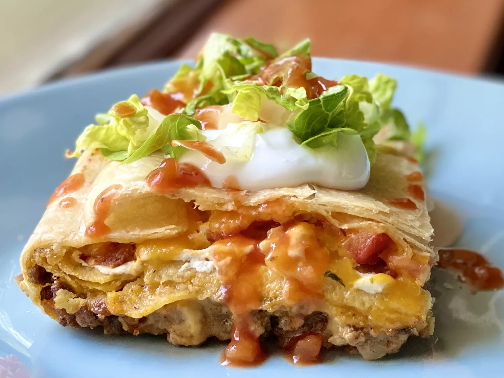

Try this crunchwrap casserole for a very hearty dinner full of perfect bites. The exterior is lightly toasted and the tostadas inside stay nice and crunchy.
Gather the ingredients. Preheat the oven to 375 degrees F (190 degrees C).
Heat a large skillet over medium-high heat. Add ground beef and cook for 2 minutes, crumbling with a wooden spoon and stirring constantly. Add onion and cook, stirring often, until meat is browned and onion has softened, about 5 minutes. Season with taco seasoning and stir to coat the meat mixture.
Pour in water and cook for 2 minutes, stirring constantly and scraping up any browned bits from the bottom. Remove from heat and set aside.
Brush melted butter lightly to coat a 9x13 baking dish. Arrange 5 tortillas along the edges and bottom of the pan, allowing any excess to hang over the sides and overlapping to completely cover the pan. Spread shredded cheese over the tortillas. Top evenly first with cilantro and then tomatoes. Spoon sour cream into a plastic bag and and squeeze over the tomatoes.
Arrange tostada shells over the sour cream overlapping them to make them fit. Spread nacho cheese sauce over tostadas.
Pour cooked beef mixture over cheese sauce and spread into an even layer.
Place remaining tortilla on the center of the beef mixture. Wrap the over-hanging tortillas around over the top tortilla.
Brush casserole with the remaining butter and press down any loose ends.
Bake in the preheated oven until golden brown and lightly toasted, about 30 minutes.
Let stand for 5 minutes and then carefully invert casserole onto a serving board or cutting board.
Using a large serrated knife, cut the casserole into desired servings. Top with shredded lettuce, more sour cream or guacamole, and hot sauce if desired.